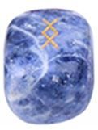

| Zlatá šupina |
Pro libovolné využití. Opravy artů kromě ohnivých holí zdarma. |
0 ks |
5 |
|
K dispozici začnou být po 14. dni. Můžete si zatím zamluvit max 1. |
| suroviny, 8000 |
Z trp města. Každý nový den od splnění je cena levnější o 2. |
6 ks |
4 |
|
19.11. vše zdarma |
| 4000xp |
Pokud máte VIP a napíšete, dostanete o 20% více. |
neomezeně |
5 |
|
Doručení nejdéle do 7 dní |
| Artefakt ČR |
Vybírat lze z portálu gdsj, případně se zeptat. |
2 ks |
4 |
|
sleva 25% za každý stejný artefakt, který zůstane po nákupu, max 75% |
| Vidle |
Zvyšují sklizené jídlo, lepší než hrábě. |
0 ks |
2 |
|
Možnost rezervace max 1 kusu |
| Hrábě |
Selky s nimi získají o něco více jídla. |
0 ks |
1 |
|
Možnost rezervace max 2 kusů |
|
| Ohnivá hůl 1*1 |
Pokud ji má hrdina, za výstřely získává xp. |
0 ks |
2 |
|
Akce 2+1 zdarma |
| Ohnivá hůl 2*2 a lepší |
Pokud jsou na skladě, při koupení více kusů dostanete lepší. |
0 ks |
5 |
|
Od každého nového 10. dne věku sleva 10% = např. 30. den sleva 60% |
| Ohnivý déšť na 36 hodin |
6 velkých holí + opravování zdarma, zabijí dábla |
0 ks |
15 |
|
určíte si dobu vyzvednutí na oltáři a za 36 hodin tam musí opět ležet |
| Ohnivá bouře na 36 hodin |
12-16 velkých holí + opravování zdarma, zabijí veledraka / arciďábla |
0 ks |
38 |
|
platí i pro déšť, doporučujení: rezervujte včas předem |